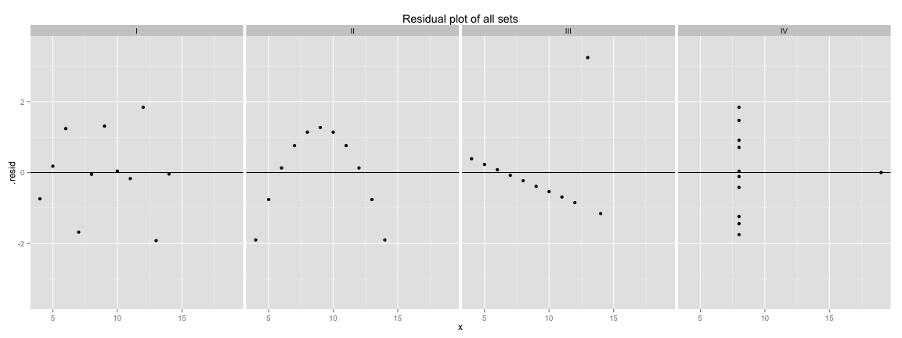
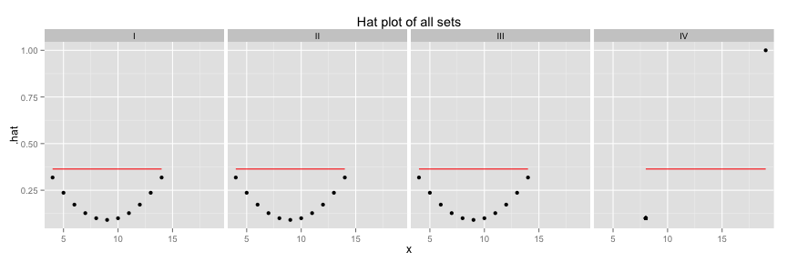
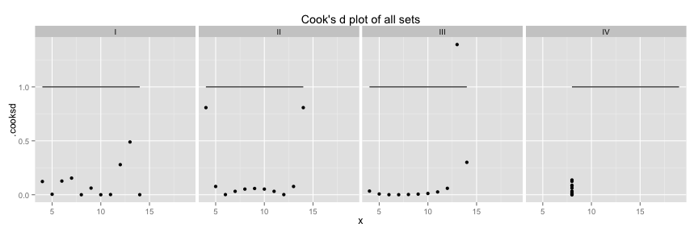
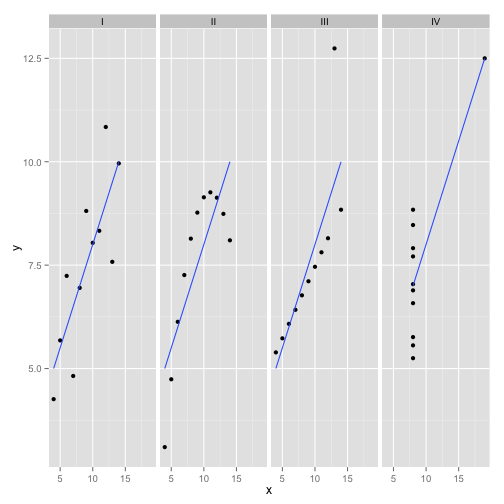
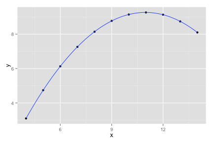
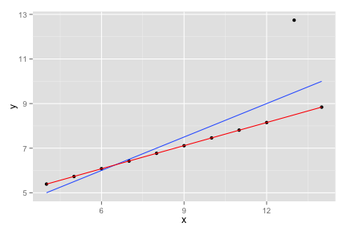
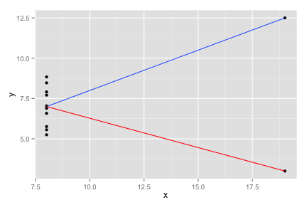

Why visualizing data matters
Mon 18 May 2015
library(dplyr)
library(tidyr)
library(ggplot2)
library(broom)
Visualizing data matters: Bla bla
head(df)
## observation set x y
## 1 1 I 10 8.04
## 2 1 II 10 9.14
## 3 1 III 10 7.46
## 4 1 IV 8 6.58
## 5 2 I 8 6.95
## 6 2 II 8 8.14
agg = df %>%
group_by(set) %>%
summarise(x_mean = mean(x), x_sd = sd(x), y_mean = mean(y), y_sd = sd(y))
agg
## Source: local data frame [4 x 5]
##
## set x_mean x_sd y_mean y_sd
## 1 I 9 3.316625 7.500909 2.031568
## 2 II 9 3.316625 7.500909 2.031657
## 3 III 9 3.316625 7.500000 2.030424
## 4 IV 9 3.316625 7.500909 2.030579
Might conclude it's the same data.
lr = df %>%
group_by(set) %>%
do(mod = lm(y ~ x, data = .)) %>%
mutate(intercept = summary(mod)$coeff[1], slope = summary(mod)$coeff[2]) %>%
glance(mod) %>%
select(set, intercept, slope, adj.r.squared, AIC)
lr
## Source: local data frame [4 x 5]
## Groups: set, intercept, slope
##
## set intercept slope adj.r.squared AIC
## 1 I 3.000091 0.5000909 0.6294916 39.68137
## 2 II 3.000909 0.5000000 0.6291578 39.69224
## 3 III 3.002455 0.4997273 0.6292489 39.67618
## 4 IV 3.001727 0.4999091 0.6296747 39.66522
Diagnostics
diag = df %>%
group_by(set) %>%
do(mod = lm(y ~ x, data = .)) %>%
augment(., mod) %>%
select(set, x, .resid, .hat, .cooksd)
head(diag)
## Source: local data frame [6 x 5]
## Groups: set
##
## set x .resid .hat .cooksd
## 1 I 10 0.03900000 0.10000000 6.139788e-05
## 2 I 8 -0.05081818 0.10000000 1.042467e-04
## 3 I 13 -1.92127273 0.23636364 4.892093e-01
## 4 I 9 1.30909091 0.09090909 6.163700e-02
## 5 I 11 -0.17109091 0.12727273 1.599342e-03
## 6 I 14 -0.04136364 0.31818182 3.828995e-04
means = diag %>% group_by(set) %>% summarise(mhat = mean(.hat, na.rm=TRUE), mcooksd = mean(.cooksd, na.rm = TRUE))
diag = merge(diag, means)
ggplot(diag, aes(x=x, y=.resid)) +
geom_point() +
facet_grid(~set) +
geom_hline(aes(yintercept = 0)) +
ylim(-3.5,3.5) +
ggtitle("Residual plot of all sets")
 Hat values measure leverage, more than twice the average are noteworthy.
ggplot(diag, aes(x=x, y=.hat)) +
geom_point() +
facet_grid(~set) +
ggtitle("Hat plot of all sets") +
geom_line(aes(y=mhat*2), col ="red")
 Values over 1, or over \(4/n\), measures influence
ggplot(diag, aes(x=x, y=.cooksd)) +
geom_point() +
facet_grid(~set) +
ggtitle("Cook's d plot of all sets") +
geom_line(aes(y=1))
## Warning in loop_apply(n, do.ply): Removed 1 rows containing missing values
## (geom_point).

ggplot(df, aes(x=x, y=y)) +
geom_point() +
geom_smooth(method = "lm", se = FALSE) +
facet_grid(~set)

Second Set
set = filter(df, set == "II")
ggplot(set, aes(x=x, y=y)) +
geom_point() +
geom_smooth(method = "lm", formula = y ~ poly(x,2))

set = filter(df, set == "III")
ggplot(set, aes(x=x, y=y)) +
geom_point() +
geom_smooth(method = "lm", se = FALSE) +
geom_smooth(data = filter(set, observation != 3), method = "lm", col ="red")

set = filter(df, set == "IV")
point = data.frame(observation = 12, set = "IV", x = 19, y = 3)
set = rbind(set, point)
ggplot(set, aes(x=x, y=y)) +
geom_point() +
geom_smooth(data = filter(set, observation != 12),method = "lm", se = FALSE) +
geom_smooth(data = filter(set, observation != 8), method = "lm", col ="red", se = FALSE)
